Exercise 1 – Create a new PBIX project file
We will start by creating and saving our PBIX project file to our computer, this will be used
throughout the design of our data model and report to save our progress.
- On your computer press the Start
 key on your keyboard and type in Power BI
key on your keyboard and type in Power BI
- Click on Power BI Desktop
- The Power BI Desktop launcher will appear, use the X button to close this
window
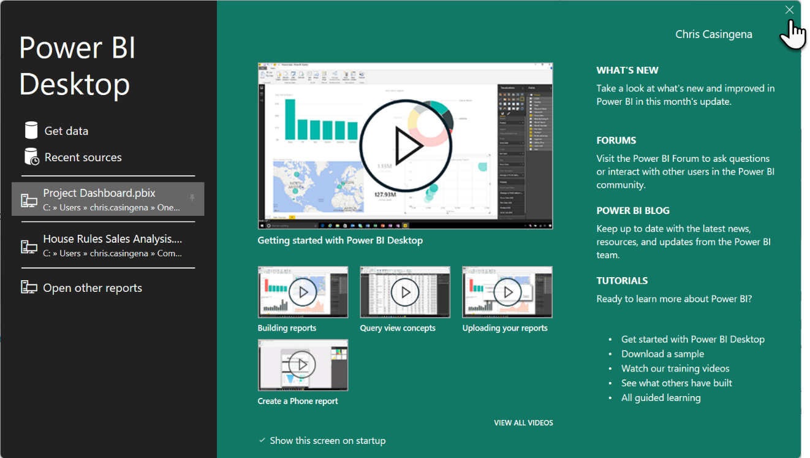
- In the ribbon, click on the File tab
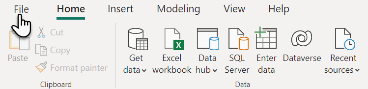
- Next, click on Save in the left menu
- Using File Explorer choose a location to save your work, remember you
will need it throughout the course so ensure it is somewhere that you will be able to find it again
- Name the file House Rules Sales Analysis then click Save
Exercise 2 – Connecting to data sources
To build our report we require data, and our transactions database has been made available for us to
connect to. In this exercise we will use a database, which is hosted in Azure SQL Server. To connect to this data, we
will use the Get Data command and select Azure SQL database and use the information and account details that we have
been provided with to form the connection.
- In Power BI Desktop, click on the Get Data button in the Home tab of the ribbon (the top half of this button will open the full menu)

- From the categories on the left of the Get Data dialog box, select Azure
- Next, from the available data sources on the right, choose Azure SQL
database

- Click Connect
- In the SQL Server database dialog box enter the following:
- Server: spoclass.database.windows.net
- Database: ckpowerbi
- Data Connectivity mode: Import

- Click OK
- IMPORTANT on the SQL Server database dialog box, select Database from the navigation
on the left
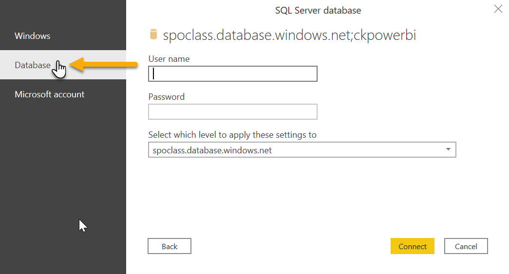
- Then enter the following credentials:
- User name: ckdatauser
- Password: Pa$$w0rd
- Then click Connect
- In the Navigator dialog, select all 4 tables
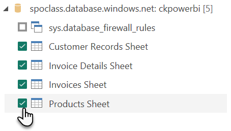
- Next, click on Load
- Allow a moment for the connection to load the data into your query, this may take longer on a
slower internet connection, the Fields pane on the right will populate once finished
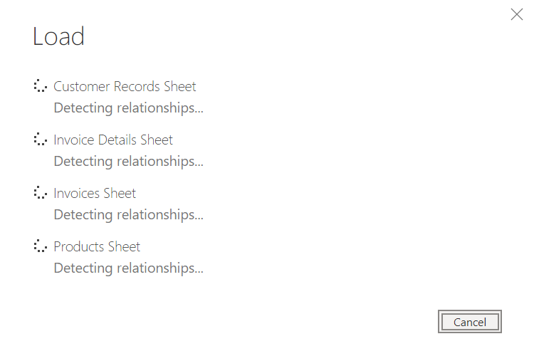
Exercise 3 – Use the Power Query editor
Now that we have connected to our data source, we will start to review the data we have and whether we
need to make some changes to it using a query. A query allows us to write a list of instructions for each table in our
data model. We can rename and format columns plus we can enact a diverse series of changes to ensure the data is clean
and ready for calculating. We will split this exercise into 4 separate queries as there are 4 tables.
Open Power Query
To get started we will need to open Power Query. This opens as a separate
window.
- In the Home tab of the ribbon, click on Transform
data in the Queries category (note the button is split in two, click on the top half
of the button to open Power Query Editor)

- The Power Query Editor will open, position this new window to suit you (you may also want to
minimise Power BI Desktop to avoid confusing it for the Power Query Editor)
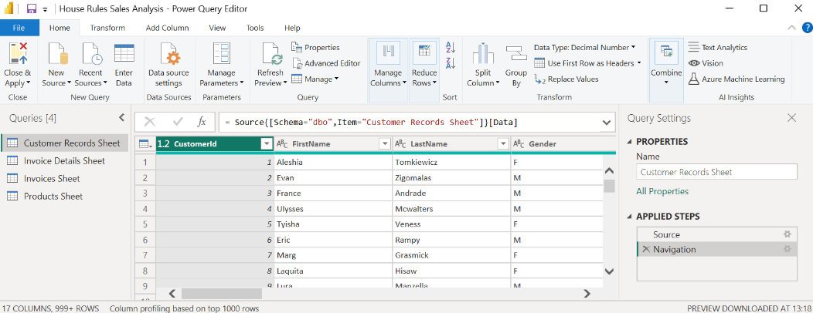
- Notice that the Customer Records Sheet is selected in the Queries pane on the left of the window, if it is not selected, please selected it
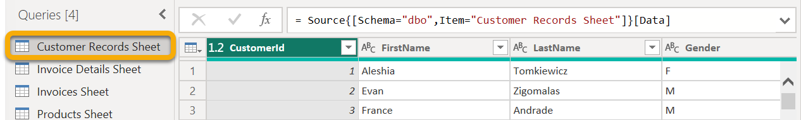
Customer Records Query
Our customer records are in a table that carries important information about the accounts that have
been created to purchase our products. You will find names, addresses and more in here. Sadly, the information in the
table is a bit messy, so we will get you to perform a variety of changes to overhaul this data.
- As we update the query for our customer data, we may need the formula bar, to activate it, click
on the View tab in the ribbon and ensure Formula bar is checked in
the Layout category, once ready return to the Home tab

- To remove any unnecessary columns from the Customers table, in the Home tab of the ribbon we can click on Choose Columns
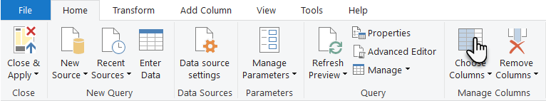
- In the Choose Columns menu, deselect the ticks
against:
- Company
- EmailAddress
- WorkPhone
- HomePhone
- Address
- Website
- Invoices Sheet
|
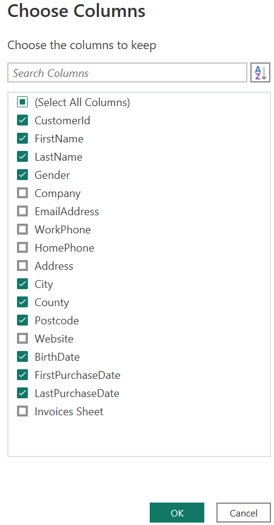
|
- Once you have the correct selection click OK
- Next, you will bring together the first and last name of the customer by using a merging command,
to do this select the FirstName column then hold down the CRTL key
on your keyboard and click LastName
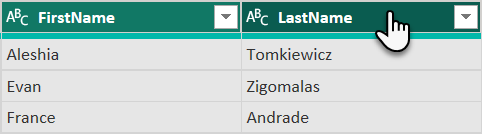
- In the ribbon, click on the Transform tab then click Merge Columns which is in the Text Column category
- Change the separator between the first and last name to be a Space and
name the new column Customer

- Click on OK to merge the two columns into the new column named Customer and note that a new applied step has appeared called Merged
Columns in the Query Settings pane to the right of the window
- Next, we do not want gender represented by the values F and M so we will replace these
references, to do this select the Gender column
- In the Transform tab of the ribbon, click on Replace
Values which can be found in the Any Column category

- In the Replace Values menu, enter the value M to
be replaced with the value Male
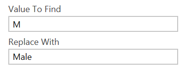
- Once you are ready, click OK
- Repeat steps 10 and 11 and enter the value F to be replaced with Female and click OK
- Notice there are two applied steps in the Query Settings pane on the
right side of the window, right click on Replaced Value and choose
Rename
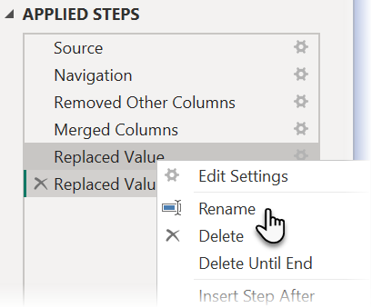
- Rename this applied step to Update M to Male then press Enter on your keyboard
- Repeat the previous step for the entry named Replaced Value 1 renaming it
to Update F to Female

- Scroll the table of data to the right and you may notice we have three date/time columns that are
formatted as text, being BirthDate, FirstPurchaseDate and LastPurchaseDate
- You can see the formatting applied based on the icon to the left of the column
name
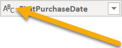
- This icon is clickable, click on this icon for the FirstPurchaseDate
column then choose Date, if you get errors in the column, this is a regional date format
issue which can be resolved by clicking here
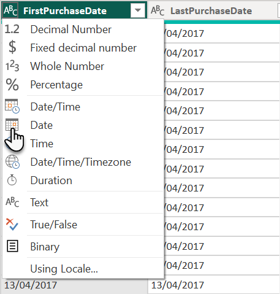
- Repeat the previous step for the LastPurchaseDate
- For the BirthDate column, format it as Date/Time
Note that we could format it as Date, but it will generate an error.
This is due to the text dd/mm/yyyy hh:mm being incompatible with the date field
- Now that it is formatted as Date/Time we can correctly switch it from Date/Time format to Date, when you do this, you will be asked to
replace or create a new step, click Add new step

- The BirthDate column will now be formatted as Date (it just took an extra
step)
Optional: Feel free to rename the applied steps for changing the column types e.g. Format Purchase Date and Format Birth Date
- Lastly in this table we will create a new conditional column to work out if our customer has only
ever purchased a single item from House Rules Board Games, or whether they are repeat customers, to do this, in the
Add Column tab choose Conditional Column from the General category
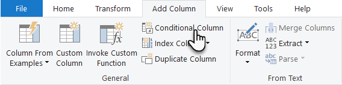
- Configure the If statement as follows, do not forget to rename your
column and switch your second property from Enter a value to Select a
column as highlighted below
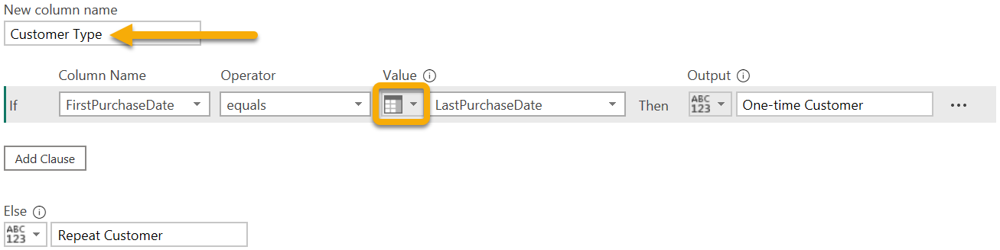
- Once ready, click on OK
- After reviewing the column, right-click and rename the applied step called Added Conditional Column to Added Customer Type
- We no longer need the first and last purchase date columns, to remove them, click on FirstPurchaseDate
- Now hold down the CTRL key on your keyboard and click on the LastPurchaseDate field

- In the Home tab of the ribbon, click on Remove
Columns from the Manage Columns category

- Format the new Customer Type column as Text

- Finally, in the Query Settings pane on the right side of the window,
rename the Customer Records Sheet to Customers
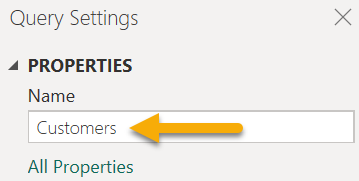
- To save our work, but remain in Power Query, click on the drop-down arrow
below Close & Apply in the Home tab of the ribbon
- Click on the option Apply
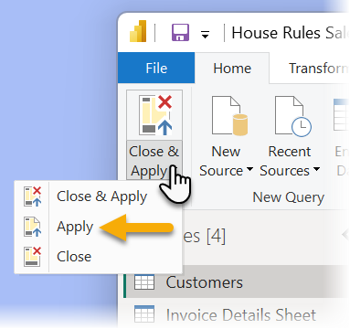
- Allow the system a moment to apply your query changes
Products Query
Next, we will look at the products table, which like the customer table has some unnecessary columns
and some incorrect formatting. We will start creating a query for this table using some of the skills we have
practiced in the customers table. Because you have already tried a few of these steps before, we will be a bit briefer
in our delivery of steps to compensate for this.
- In the Queries pane on the left side of the window, select the Products Sheet query
- In the Home tab of the ribbon, click on Choose
Columns
- Remove the following columns from the selection:
- ProductCode
- Description
- Invoice Details Sheet
- Once ready, click on OK
- Right click on the column heading Title and
choose Rename
- Change the column heading to Product and press Enter on your keyboard
- Next, we will split up the product categories by right clicking on the ProductCategory column heading
- From the menu choose Split Column > By
Delimiter…
- Configure the Split Column by Delimiter window as follows
IMPORTANT in the configuration below there is a space either side of
the > character
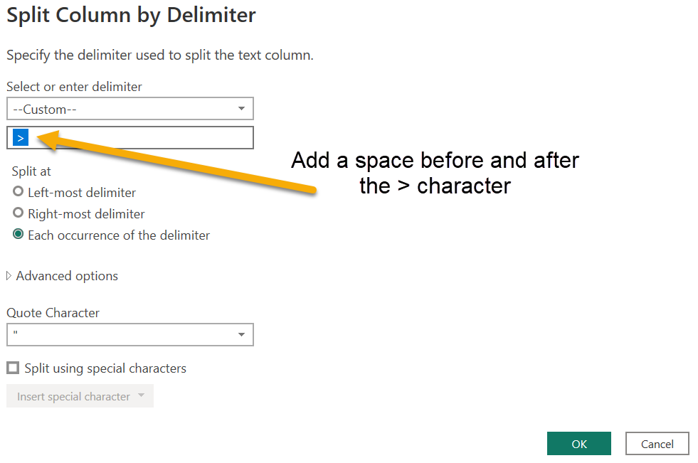
- Click OK to split the columns
- Right click on the following columns to use Rename to change the column title
- ProductCategory.1 is renamed to Category
- ProductCategory.2 is renamed to Subcategory

- Lastly, using the Format button in the column heading, please
update the format for the following columns
- UnitCost format as Fixed Decimal Number
- ListPrice format as Fixed Decimal Number
- In the Query Settings pane on the right side of the window,
rename the Products Sheet to Products

- To save, click on the drop-down arrow below Close
& Apply in the Home tab of the ribbon
- Click on the option Apply
Invoice Details Sheet
The next table is quite important as it will become the ‘facts table’ within our data model as it
contains our event records. To do this we will need to hide some of the columns and expand related columns. This
allows us to bring columns from other related tables into the current table, forging new relationships which can
optimise our data model. We will review this change in the last exercise of this lab.
- In the Queries pane on the left side of the window, select the Invoice Details Sheet query
- You can reorder columns by holding your left mouse button down on a
column heading and dragging it either left or right, using this technique, reorder the columns as shown:
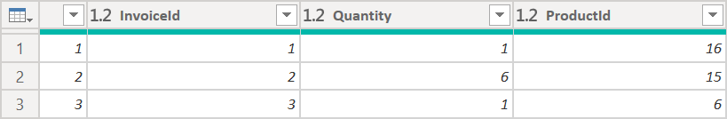
- Format the column named SalesAmount as Fixed Decimal
Number
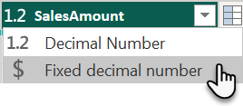
- Next, we will copy columns from the related Invoices Sheet table, into the Invoice Details Sheet
table, to do this click on the Expand button in the Invoices Sheet
column heading
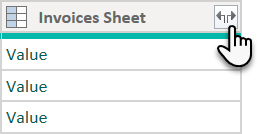
- In Columns to Expand, only select InvoiceDate and
CustomerId
- Untick Use original column name as prefix
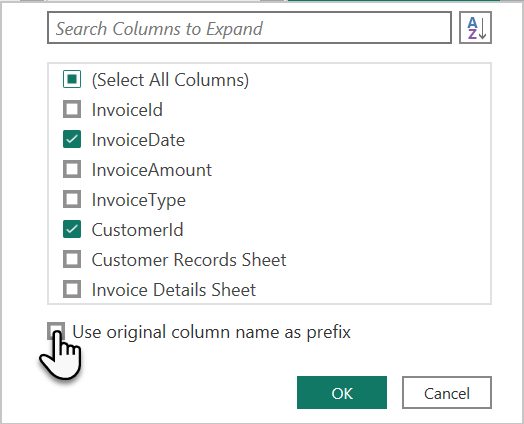
- Once you have selected your columns and deselected the naming prefix, click OK, allowing a moment for the process to complete
- Drag and drop the columns into the following order
- Id
- InvoiceId
- ProductId
- CustomerId
- InvoiceDate
- Quantity
- SalesAmount
- Products Sheet
- Change the format of the InvoiceDate column to Date
- Rename the column from InvoiceDate to PurchaseDate
- Next, click Expand on the Products Sheet
column

- Only select UnitCost and click OK
- Format the UnitCost column as Fixed Decimal
Number
- The reason to bring the unit cost from our products table into our invoice details is to multiply
it by the quantity column to give us a product cost, which we will add as a new column, to do this click on the Add Column tab in the ribbon and select Custom Column
- Name the column ProductCost and then use the available columns to create
the formula =[Quantity] * [UnitCost]
- Click OK once you have configured your custom column
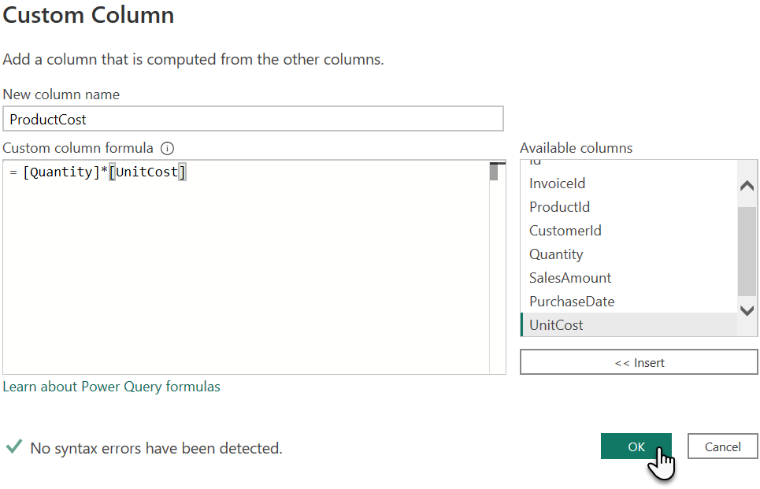
- Format the new ProductCost column as Fixed Decimal
Number
- Now we have our custom column, we no longer need UnitCost so we can safely remove it by right clicking on UnitCost and selecting Remove
- Lastly, in the Query Settings pane on the right side of the
window, rename the Invoice Details Sheet to Sales
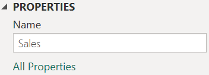
- To save, in the Home tab of the ribbon, click on the drop-down arrow below Close & Apply
- Click on the option Apply
Invoices Sheet
We are now at our last query, and there is not too much to do here. We have an objective to replace
less friendly terms like an InPerson/MailOrder/Online invoice to something more palatable.
- In the Queries pane on the left side of the window, select the Invoices Sheet query
- From the Home tab, click on Choose
Columns and select only the following columns
- InvoiceId
- InvoiceType
- Leave the remaining columns unselected then click OK
- Select the InvoiceType column
- To change the values in the InvoiceType column, select the Transform tab in the ribbon, then choose Replace Values
- Replace InPerson with Store Purchase and click OK
- Repeat step 5 and change the following values
- Replace MailOrder with Mail Order Purchase
- Replace Online with Online Purchase
- Now rename the InvoiceType column to Purchase Type
- Lastly, in the Query Settings pane on the right side of the window,
rename the Invoices Sheet to Purchases and press Enter
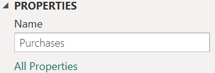
- To save, click on Close & Apply (the top half of the Close &
Apply button) in the Home tab of the ribbon which will close Power Query Editor
Exercise 4 – Review the table relationships
Once our queries have been applied, they will refine the data within our model. In our query we
expanded some columns, which brought related columns from other tables into the current table. We also removed other
columns that previously formed relationships across tables. This was deliberate, as we were attempting to move our ID
columns into a central table, the Sales table, with the other tables gaining a one hop relationship to it. Before we
started this exercise, our data model looked like this:
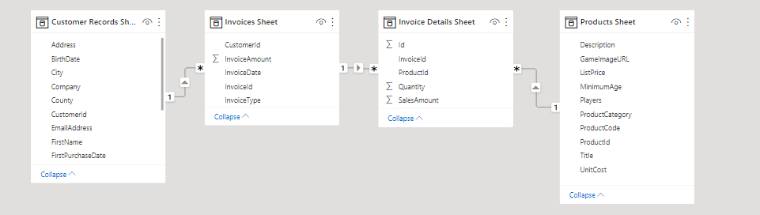
- To review the new data model, click on the Model
 button in the rail menu
button in the rail menu

- Our data model resembles the one below, note that there is no longer a relationship between
Customers and Purchases as the CustomerId was removed from the Purchases table, but it was added to the Sales table
(use the zoom slider at the bottom of model view to see all of the tables, you can also collapse the panes on the
right too)
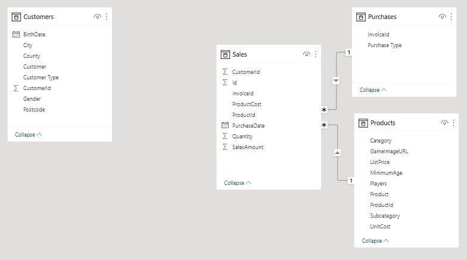
- In the Home tab of the ribbon, click on Manage
Relationships
- Click on Autodetect… and you should find one new relationship, then click
Close
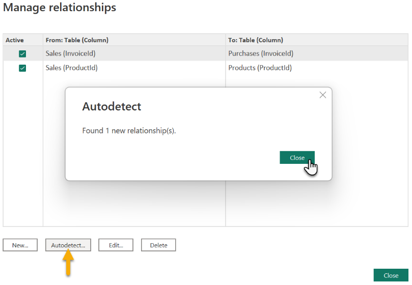
- A new relationship is forged between the Sales and Customer table as they both have the CustomerId column